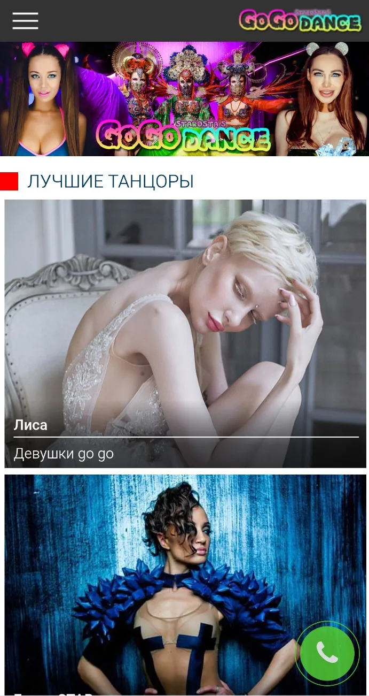
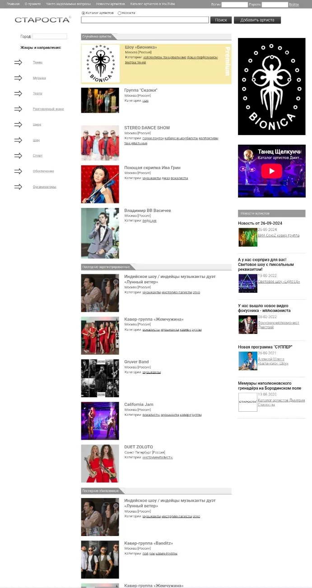

С 2013
Леонид Агутин
Сайт Леонида Агутина вручную написала Елена Митькина. В 2013 году мне выпала честь продолжить эту работу: поддерживать сайт, наполнять его, следить за актуальностью информации и вести социальные сети музыканта.
За годы сайт фактически стал энциклопедией творчества Леонида Агутина — здесь важнее полнота архива и достоверность информации, чем погоня за очередным веб-трендом.
leonidagutin.ru ↗

С 2012
GoGoDance.ru
Сайт агентства клубных танцоров — направления, которое бурно развивалось в 2000-е и остаётся востребованным сегодня. Его новое поколение ещё впереди.
gogodance.ru ↗

С 2000
Starosta.ru
В начале 2000-х — небольшой ресурс об артистах для клубов и мероприятий. Позже он превратился в каталог, где коллективы могли самостоятельно регистрироваться и продвигать себя.
starosta.ru ↗